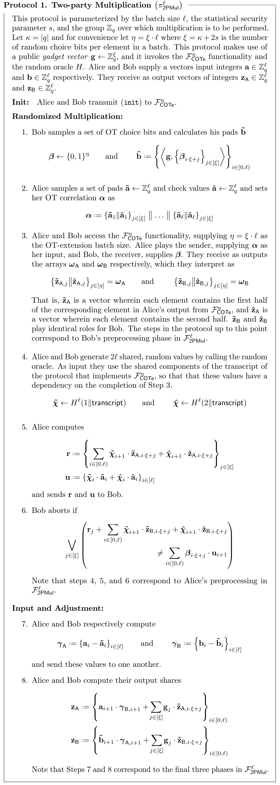
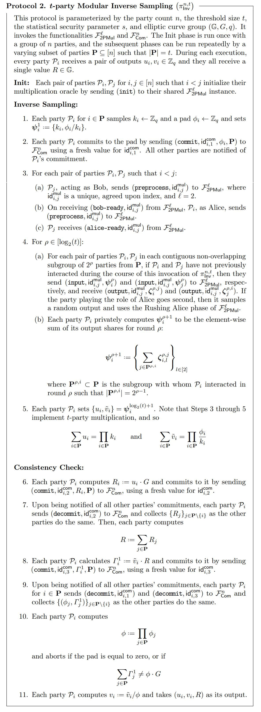
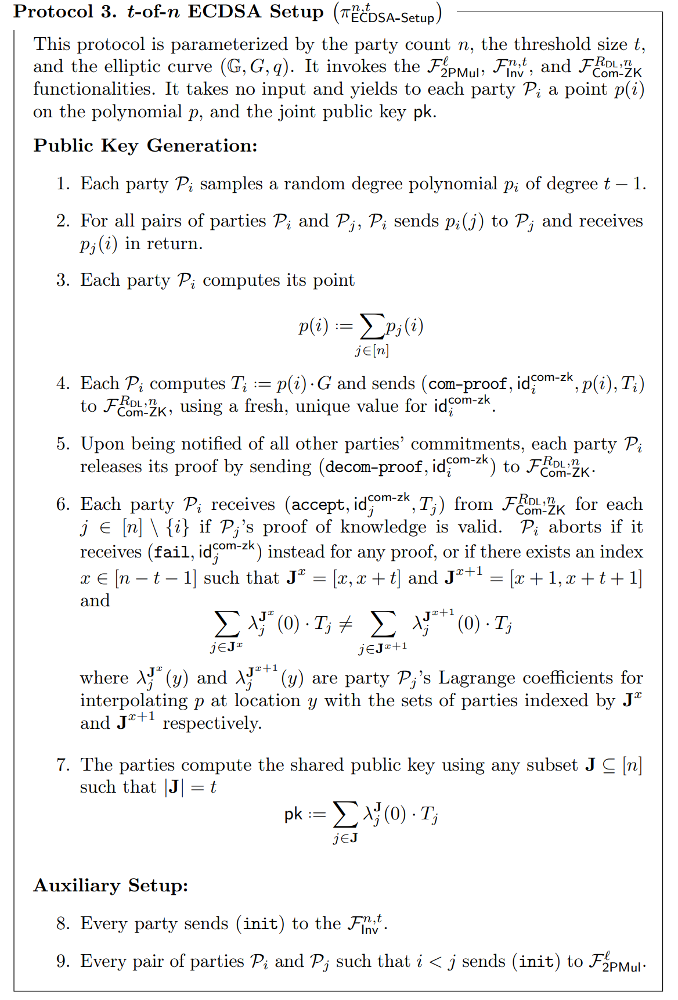
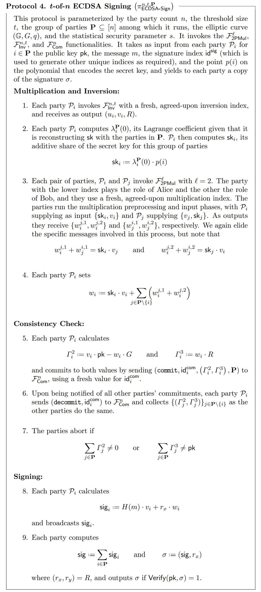

$(t, n)$ case from Doerner et al. (2019) #
In this work, Doerner et al. continue to improve the previous version of the protocol presented in Doerner et al. (2018) and generalize it to the arbitrary threshold case $(2, n)$. They prove the security of their protocol under CDH assumption in the Global Random Oracle model. At the end of the work, they propose a series of experiments showing that their solution is practical even when using low-power devices.
The protocol has a setup phase that is an extension of the work of Doerner et al. (2018). In this setup, the parties obtain a Shamir secret-share of $\textsf{sk}$ with threshold $t - 1$. This means that $t$ parties can join efforts to reconstruct $\textsf{sk}$. The Shamir shares allow $t$ parties to obtain an additive share of $\textsf{sk}$ using the Lagrange multiplies consistent with the Shamir secret-sharing scheme.
The signing protocol is performed between a set of $\mathbf{P} \subseteq [n]$ parties with $\vert \mathbf{P} \vert = t$. This phase is comprised of three parts:
-
Multiplication and inversion. Here the parties involved in the signing protocol use a $t$ party inverse protocol to obtain additive shares of $k$, $1/k$ and the value $R = k \cdot G$, where $k$ is sampled at random from $\mathbb{Z}_q$. Then, they use a multiplication protocol to compute additive shares of $\textsf{sk}/k$ using the additive shares of $1/k$ and $\textsf{sk}$ as input.
-
Consistency check. In this phase, the parties use public values like $\textsf{pk}$ and $R = k \cdot G$ to check the consistency of the values generated in the previous phase.
-
Signing. Once the parties have finished with the checking phase, they will end up with shares $v_i$ and $w_i$ such that:
- $\sum_{i \in \mathbf{P}} v_i = 1/k$.
- $\sum_{i \in \mathbf{P}} w_i = \textsf{sk} / k$.
Then, parties will compute shares of the signature $\textsf{sig}_i = v_i \cdot H(m) + w_i \cdot r_x$. Finally, they can reconstruct the signature by computing $\textsf{sig} = \sum_{i \in \mathbf{P}} \textsf{sig}_i$.
Preliminaries #
The ECDSA signing protocol relies on two ideal functionalities already discussed in previous works. The first one is $\mathcal{F}_\textsf{Com}^n$ which is a commit functionality among $n$ parties. The second functionality involved is $\mathcal{F}_\textsf{Com-ZK}^{R_\textsf{DL}, n}$ which is a ZKPoK of discrete logarithms. The third functionality is a correlated oblivious transfer extension functionality which has been mentioned in the work of Doerner et al. (2018) in the previous section. Again, this COTe functionality is realized using the work of KOS OT whose original version has an incorrect proof of security. Therefore, it is better to choose other alternatives for this, for example SoftSpokenOT by Lawrence Roy (2022).
Two-party multiplication #
First, we describe a protocol for a two-party multiplication. This functionality, called $\mathcal{F}_\textsf{2PMul}^l$, takes an input vector $\mathbf{a} \in \mathbb{Z}_q^l$ from Alice and an input vector $\mathbf{b} \in \mathbb{Z}_q^l$ from Bob, and it computes two vectors $\mathbf{z}_\textsf{A}, \mathbf{z}_\textsf{B} \in \mathbb{Z}_q^l$ such that ${\mathbf{z}_\textsf{A}}_i + {\mathbf{z}_\textsf{B}}_i = \mathbf{a}_i \cdot \mathbf{b}_i$. The funcitonality sends $\mathbf{z}_\textsf{A}$ to Alice and $\mathbf{z}_\textsf{A}$. Intuitively, the functionality takes a batch of numbers from both sides and computes additive two-party shares of the product of each component in the batch. The full specification of this functionality can be found in Doerner et al. (2019).
The protocol that realizes this functionality is the following:

Modular inverses #
Now, we describe a protocol that allows $t$ parties to obtain shares of a random number and its modular inverse along with its product with the generator of the elliptic curve. The ideal functionality associated with this protocol is called $\mathcal{F}_\textsf{Inv}^{n, t}$. The protocol interacts with multiple instances of the $\mathcal{F}_\textsf{2PMul}^l$ functionality presented above. More specifically, the party $\mathcal{P}_i$ will obtain additive shares $u_i$, $v_i$ and a value $R$ such that: $\sum_{i \in \mathbf{P}} u_i = k$, $\sum_{i \in \mathbf{P}} v_i = 1/k$ and $R = k \cdot G$.
In this protocol, the parties sample multiplicative shares of $k$ and a random value $\phi$, and then they compute multiplicative shares of $\phi / k$ locally. Then, these multiplicative shares are converted into additive shares of $\phi / k$. At the end of the protocol, the parties perform a consistency check to confirm that both the additive shares and multiplicative shares are related in the correct way, and then they reconstruct the value of $\phi$ to transform the shares of $\phi / k$ into shares of $1/k$.
We now present the protocol specification according to Doerner et al.

Signing protocol #
With the preliminaries established, we can present the protocol for threshold ECDSA. Doerner et al. present this protocol in two phases: a setup phase and a signing phase.
In the setup phase, the parties generate Shamir secret-shares of the private key $\textsf{sk}$ with threshold $t$. Then each party can locally generate a $t$-party additive share using the appropriate Lagrange multipliers. The novel strategy in this protocol relies on each party confirming if all possible subsets of $t$ consecutive parties have sent to him/her consistent shares of $\textsf{sk}$ with respect to $\textsf{pk}$ by checking the relation homomorphically in the elliptic curve group as we will see in Step 6 of the protocol. This will not reveal the key $\textsf{sk}$ because it will be hidden all the time “in the exponent”. We present the setup protocol next:

Once the $n$ parties have completed the setup phase, any group $\mathbf{P}$ of $t$ parties can get involved in the signing phase by inputting the message $m$, the public key $\textsf{pk}$ and the share $p(i)$ of $\textsf{sk}$ obtained in the setup phase. At the end of the signing phase, each party in $\mathbf{P}$ obtains a copy of the signature $\sigma$. The protocol of the signing phase is presented next:

Security concerns #
- The ECDSA functionality aborts if any party tries to reuse the same session ID, send a message out of order, etc. We need to check that the implementation also considers this case, and we also need to be more specific in which cases the functionality aborts.
- The functionalities presented here have aborts that are session global. This means that when a misbehavior produces an abort, all further commands with the same session ID are rejected.
- In Section 2.3, Paragraph 1, the authors say that $\mathcal{F}_\textsf{Com-ZK}^{R_\textsf{DL}, n}$ allows a party to send a commitment to both an elliptic curve point and a proof of knowledge of its discrete logarithm to a group of parties, and then reveal both. For an inexpert programmer, this can be confusing in the sense that this functionality only reveals the commitment point in the elliptic curve and it does not reveal the associated discrete logarithm.
- Deprecate the use of Keller et al. (2015) for OT extension protocols given that Roy (2022) have found some gaps in the proof.
- Functionality $\mathcal{F}_\textsf{2PMul}^l$ has two typos. In “Alice’s input” phase it needs to check that $\mathbf{a} \in \mathbb{Z}_q^l$ instead of $\mathbb{Z}_q$, and the same occurs in “Bob’s input” for $\mathbf{b}$.
- In the multiplication protocol we need to make sure that parties perform the consistency check in Step 6.
- Although the third round of protocol $\pi_\textsf{2PMul}^l$ is not necessary for the protocol, it is necessary for the proof of security. There are cases in which an adversary can compromise the random multiplication.
- In the protocol $\pi_\textsf{Inv}^{n, t}$, Step 6, the order in which the parties interact matters. In this case, if the party that plays the role of Alice goes second, we need to consider a Rushing Alice phase when we are executing the protocol that realizes $\mathcal{F}_\textsf{2PMul}^l$.
- We need to check if the consistency checks in Steps 6-10 are correctly executed.
- In the ECDSA protocol, we need to check what hash function is being used. The standard specifies that this function should be SHA-256.
- We need to check that the consistency check in the ECDSA Setup protocol presented in Step 6 is computed correctly.
- We need to check that the consistency check in the ECDSA Signing protocol presented in Steps 5-7 is computed.
- At the end of the signing protocol, each party should verify that the signature is correct by using the $\textsf{Verify}$ algorithm in the ECDSA standalone version.
ZK-proofs and commitments: #
- In the protocol $\pi_\textsf{Inv}^{n, t}$, Step 2, each party $P_i$ in the subset of parties commites to the value of $\phi_i$.
- In the protocol $\pi_\textsf{Inv}^{n, t}$, in the Consistency Check, Step 6, each party $P_i$ commits to the value of $R_i$.
- In the protocol $\pi_\textsf{Inv}^{n, t}$, in the Consistency Check, Step 7, each party $P_i$ commits to the value of $\Gamma_i^1$.
- In the protocol $\pi_\textsf{ECDSA-Setup}^{n, t}$, Step 4, each party $P_i$ commits and proofs in zero-knowledge that $p(i)$ is the discrete logarithm of $T_i$.
- In the protocol $\pi_\textsf{ECDSA-Sign}^{n, t}$, Step 5 of the Consistency Check, each party $P_i$ commits to the tuple $(\Gamma_i^2, \Gamma_i^3)$.
References #
- Doerner, J., Kondi, Y., Lee, E., & Shelat, A. (2019). Threshold ECDSA from ECDSA Assumptions: The Multiparty Case. In 2019 IEEE Symposium on Security and Privacy (SP) (pp. 1051-1066).
- Keller, P. (2015). Actively Secure OT Extension with Optimal Overhead. In Advances in Cryptology – CRYPTO 2015 (pp. 724–741). Springer Berlin Heidelberg.
- Lawrence Roy (2022). SoftSpokenOT: Quieter OT Extension from Small-Field Silent VOLE in the Minicrypt Model. In Advances in Cryptology - CRYPTO 2022 - 42nd Annual International Cryptology Conference, CRYPTO 2022, Santa Barbara, CA, USA, August 15-18, 2022, Proceedings, Part I (pp. 657–687). Springer.